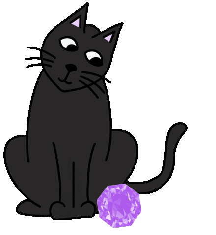

Living Needs
Russian blues absolutely prefer a familiar schedule and might not do well when confronted with new situations. A calm, predictable living environment without frequent visitors is the best fit for these sensitive, shy cats.
Just because they're wary of strangers doesn't mean these cats don't love company—they do! In fact, Russian blues are likely to be great fits with your family members and get along well with other pets and children whom they've had a chance to warm up to.
Their independent streak means these kitties are fine to be left alone for a while, so owners who work long hours or have active social lives outside of the home don't need to worry.
But remember: While Russian blues are fine to spend some time alone, they'll happily greet you at the door when you make it back and need plenty of attention to be happy.
Because they're highly intelligent, this breed needs physical and mental stimulation.

They'll appreciate having an abundance of toys to help them work out all that body and brain energy. Buy a cat tree (or two), some scratcher toys, and play with your Russian blue whenever she gets the zoomies.
A tuckered-out Russian blue will happily spend a few hours curled up in your lap.
Marks says Russian blues are avid hunters. So don't be surprised if your kitty spends most of her day in the window watching and chattering at passing birds and squirrels.
And because of her prey drive, you might want to think twice before bringing home a pet parakeet or hamster